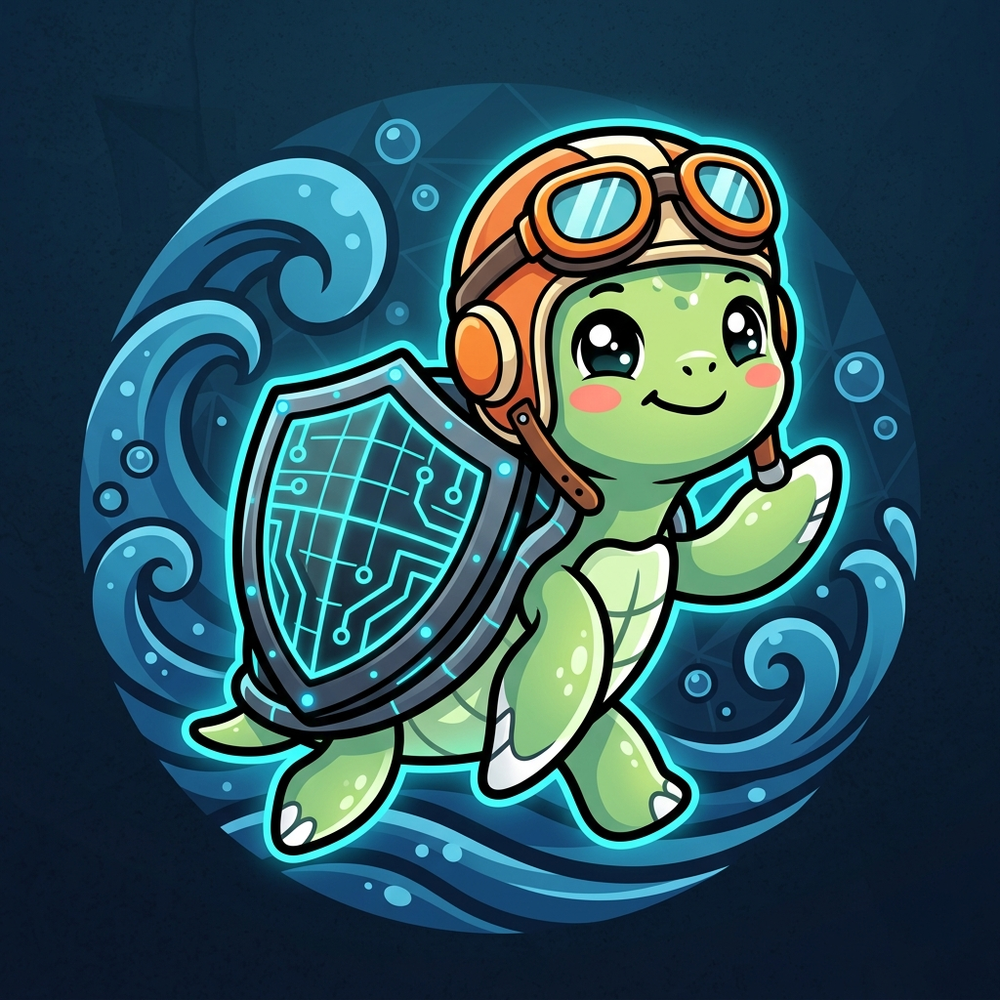

TideWardDeFi lending & perps sit on billions in TVL, yet rely on static LTV / caps / rates and human governance that takes days to react. When a stablecoin de-pegs or an oracle deviates, markets collapse in seconds.
An autonomous off-chain AI risk agent that talks directly to a Sui Move Policy Object, adjusting protocol parameters in real time — while preserving absolute DAO control via Sui's native capability pattern.
Not alerts — it executes atomic PTBs to adjust params on-chain, no human in the loop.
Protocols integrate one assertion line. Core code consults RiskPolicy at the VM level.
Sui's native Capability pattern: the DAO holds an OverrideCap to instantly revert.
Object model scopes policy per pool/market — not protocol-wide globals.
RiskPolicy<M>, pending-action snapshots, cascading revert, asymmetric rate-limit (tighten 0-cooldown / loosen throttled).
Sole production minting path for PriceReading; feed-id bound to oracle, canonical staleness check.
Monotonic-protective force_protect — can only lower LTV / add flags, bypassing oracle.
UpgradeCap wrapped, 72h timelock, permissionless execute, AdminCap cancel — transparent.
Admin / Publisher / Emergency / Override caps. Per-market registration, no external-id misbind.
60 Move tests · 0 warnings · 3-round review (quality · security-guard · red-team, 0 EXPLOITED).
Live SUI/USDC/BUCK oracle feeds + the AI risk score, streaming on-chain events as a readable ticker.
A simulated de-peg trips the threshold → TideWard pushes a live Pyth update through post_score_and_apply → LTV auto-tightens on-chain (8500 score → 3000 bps).
The OverrideCap holder reverts the parameter change in one click — witnessed on-chain within the override window.
TideWard — when the tide turns, the guardian acts. Thank you. 🌊🛡️